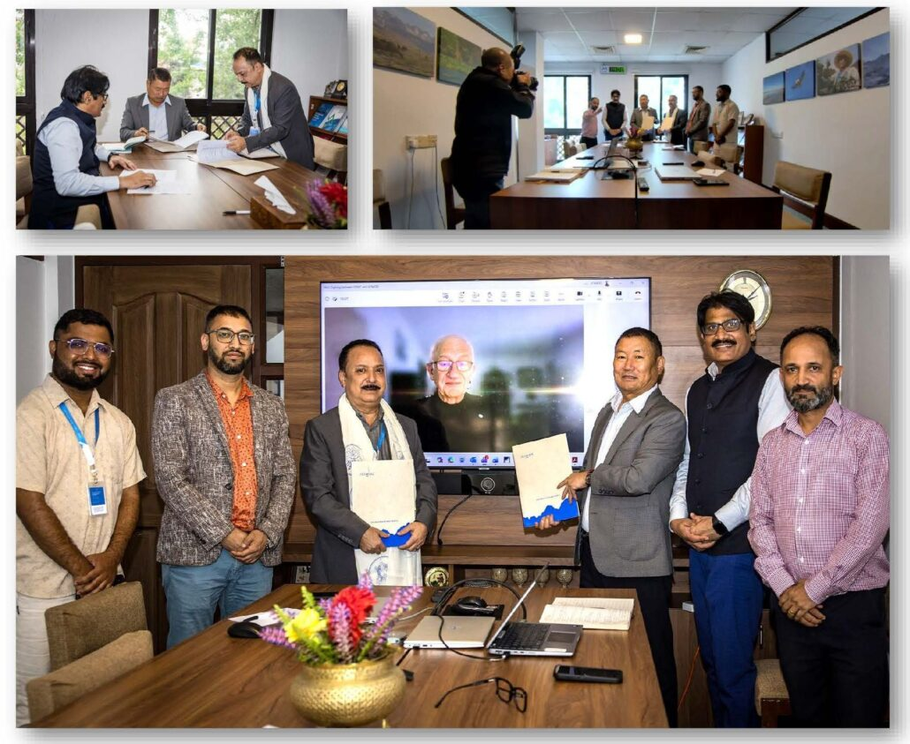

Photo credit: Jitendra Raj Bajracharya (ICIMOD)
On 7 May 2026, the International Centre for Integrated Mountain Development (ICIMOD), Lalitpur, Nepal, and the Global Fire Monitoring Center (GFMC), Freiburg, Germany, signed a Memorandum of Understanding (MoU) concerning collaborative fire and landscape management for environmental resilience and air quality improvement in the Hindu Kush Himalaya (HKH) region.
The MoU establishes a framework for cooperation between the two organizations in areas of mutual interest, guided by partnership principles of integrity and alignment, shared purpose and mutual benefit, mutual respect, shared investment and ownership, and long-term commitment. It runs through 31 December 2030, with provision for renewal by mutual agreement.
Under the agreement, the Regional South Asia Fire Management Resource Center (RSAFMRC) will collaborate with ICIMOD in strengthening the capacities of national and local stakeholders across the HKH region — including awareness-raising, capacity development in fire management incorporating indigenous knowledge and community-based approaches, facilitation of experience-sharing, and promotion of Integrated Fire Management principles. The Parties will also work to link ICIMOD's activities with the Global Fire Management Hub hosted by the UN Food and Agriculture Organization (FAO), and coordinate with the World Meteorological Organization (WMO) on landscape fire-related air pollution issues.